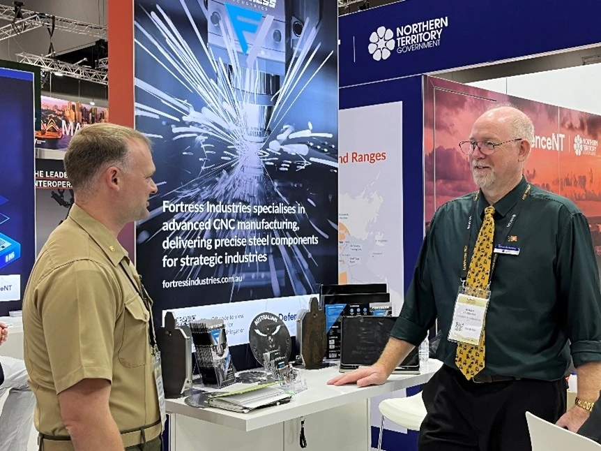

SEAPOWER ·
How Marines are 3D Printing Lethality Behind Enemy Lines
Read the original
Logistics in a Contested Environment: A New Operational Reality
Although Washington’s military focus over the past three decades has centered on counterinsurgency operations in the Middle East, the 2018 National Defense Strategy (NDS) marked a critical shift, as revisionist powers reignited long-term strategic competition across regions and theaters of operation. Chief among them, China – America’s pacing threat – has moved with speed and intent, creating flashpoints in the Indo-Pacific, complicating U.S. posture in the Middle East, and reshaping the strategic calculus in Eastern Europe.
“The world is a dangerous place, as evidenced by Putin’s adventures in Ukraine, the war between Israel and Hamas, the aggressive behavior of China, and other threats from Iran and North Korea,” said Glenn Lamartin, an acquisition expert and adjunct professor at Georgetown’s McCourt School of Public Policy. “These actors share neither our values nor our interests, and their behavior contravenes them. Because of this, we have recognized that our acquisition architecture needs to be fast and agile to respond to – and be resilient in the face of – these challenges.”[i]
In this new era of great power competition, navigating logistics in a contested environment has become a critical challenge, with adversaries targeting supply chains to disrupt U.S. military capabilities. Ensuring rapid and resilient resupply is thus essential for combat effectiveness.
In response to this new reality, the Marine Corps – guided by Force Design’s vision for modernization – is undergoing significant transformation to enhance its agility and resilience, ensuring that it can effectively confront and neutralize these evolving threats across multiple domains and contested environments. By introducing additive and advanced manufacturing, or 3D printing capabilities, Marine Corps Systems Command (MCSC) is bolstering commands’ abilities to rapidly produce critical parts in the field, further strengthening operational flexibility and effectiveness in the First Island Chain today.
3D Printing Warfighter Lethality
Recognizing this new operational reality, MCSC’s Program Manager for Combat Support Systems (PM CSS) is actively integrating additive manufacturing capabilities to the warfighter’s toolkit in order to streamline supply chains and enable on-demand fabrication of critical capability components.
According to Terry Ritchie, product manager for Maintenance and Support Systems, “AM capabilities are revolutionizing the Marine Corps across the range of military operations by flattening the supply chain and enhancing the Marine Air Ground Task Force (MAGTF) ability to achieve truly distributed operations. As the Marine Corps conducts operations over greater distances, AM capabilities will enable expeditionary forces to shorten supply chains by streamlining the fabrication authorization and approval process.”[ii]
Such capabilities are especially critical in the context of Expeditionary Advanced Base Operations (EABO), where mobile, distributed forces must be highly self-reliant. PM CSS’s Tactical Fabrication (TACFAB) and Expeditionary Fabrication (XFAB) systems enable forward-deployed units to rapidly produce essential items like unmanned aerial system components and vehicle repair parts, supplementing traditional supply chains that may be vulnerable or overextended.
Building on these capabilities, the Corps envisions leveraging forward-deployed 3D printing even further. In advanced operational environments, acquisition experts see the potential to produce essential components on the spot. While metal parts might not be made behind enemy lines, they could be manufactured on ships, advanced naval bases, or EABs with logistics support missions. Ideally, pre-positioning ships would be equipped as floating production facilities, capable of fabricating critical parts for vehicles and radar systems. This approach ensures that essential items are available closer to the front lines, enhancing the resilience and survivability of our supply chain.
This vision is already being tested. During RIMPAC 2024, Marines and engineers from the Naval Post Graduate School’s Consortium for Advanced Manufacturing Research and Education (CAMRE) demonstrated the power of onboard 3D printing on the USS Somerset.[iii] Shortly after deploying a hybrid-metal printer, the team successfully printed a critical component for the ship’s reverse osmosis pump – vital for producing clean water – after the original part failed. This rapid response not only maintained the ship’s operational readiness but showcased the potential for Marines to use 3D printing to address urgent repair needs directly at sea. By operationalizing AM capabilities on ships alongside our Navy partners, the Navy-Marine Corps team is leading the charge in ensuring that essential repairs and parts production can happen closer to the front lines, enhancing the flexibility and resilience needed in contested environments.
Another example of 3D printing at sea occurred in April 2024, when the amphibious transport dock USS San Diego (LPD 22) tested a liquid metal jetting additive manufacturing process developed by the CAMRE team. Sailors aboard the ship were able to locally reverse engineer and fabricate low pressure air fittings, toggle pins, sound powered phone caps, and flush deck nozzle covers. Talk about Force Design experimentation at its best.[iv]
Yet in a contested Indo-Pacific, ships equipped with printers and feedstock materials alone can’t shoulder the entire burden. To truly fortify supply chains and meet the demands of an EABO environment, the Corps will need to leverage partner nation resources and industrial bases.
While the Advanced Manufacturing Systems team fields containerized machine shops and 3D printing shelters, there is a whole category of fabrication machines that are not easily made expeditionary. These machines are readily available in U.S. industries, producing repair parts for our equipment. In a peer-competitor conflict, where logistics will be contested from the continental U.S. and across every mile of the Pacific Ocean, it makes sense to identify and utilize similar machines within allied economies. CSS is already taking steps in this direction, actively collaborating with Australian partners out of Darwin in the Northern Territory – just one example of the team’s efforts to explore host nations’ potential to adopt commercial additive manufacturing as together we prepare to bring the fight tonight.
There are additive and subtractive machines commonly found in the U.S. industrial base that manufactures parts for the Department of Defense. Current supply chains rely on this industrial base for large-scale production, only to ship small quantities of parts across the globe to support Marines in the Indo-Pacific. As these globe-spanning supply lines become increasingly contested, the Marine Corps is focused on leveraging local host-nation industrial capabilities for on-demand production of repair parts to reconstitute equipment. This approach aligns with the EABO concept of “modern battlefield foraging” – but for repair parts. PM CSS is essentially building distributed and resilient nodes, with both military partners and commercial vendors, throughout the Indo-PACOM area of operations to lower distribution risks.
Advanced manufacturing starts with a digital file and ends with a physical part. While Marine Corps programs of record provide essential deployable fabrication capabilities, some machinery simply doesn’t lend itself to expeditionary use. By leveraging local industry, the goal is to enable Marines to use pre-positioned design files to produce parts locally. If a machine shop is making scooter parts, there’s no reason it can’t produce a bracket for military equipment – so long as the design is readily available and adaptable.
But combatant commanders won’t have to rely on faraway capabilities in the future fight. The XFAB, with its deployable workshops equipped for 3D printing and scanning provides Marines with the ability to fabricate repair parts and develop customized solutions directly in the field, with metal printing capabilities planned for FY26. These initiatives, alongside the introduction of the Advanced Integrated Mobile Machine Shop (AIMMS), aim to enhance and extend existing logistics capabilities, ensuring that Marines can overcome supply chain challenges, sustain operational readiness, and meet the demands of contested environments.
To fully capitalize on this capability, CSS is developing a globally accessible digital repository that ensures technical data packages for part fabrication are available across all logistics levels and can be easily shared with joint and allied partners. Known as the Digital Manufacturing Data Vault, this capability stores advanced manufacturing technical data packages, mitigating supply chain disruptions while addressing the challenges of intellectual property rights and OEM collaboration. By leveraging an agile acquisition pathway through a production Other Transaction Authority (OTA) contract, the team has been able to adapt commercial software tools to meet Marine Corps requirements.
“If you look systemically, what AM is bringing to the issue of logistics for a contested environment and the tyranny of distance in the Pacific – or any contested space – is a supplemental source of supply,” said Maj. Matthew Audette, Advanced Manufacturing Systems Team lead. “It’s not about replacing the existing supply system or original equipment manufacturer (OEMs); it’s about providing another sourcing option to fill gaps – whether due to long lead times, obsolescence, or material shortages – especially in the isolated environments where Stand-in Forces operate. We’ve often seen it as a kind of magic button where things just appear, but it’s time to recognize it as a crucial supplement to our supply chain.”[v]
In short, advanced manufacturing revolutionizes logistics by transforming how we sustain operations in the field. No longer bound by the limitations of traditional supply lines, Marines can now produce essential components like vehicle parts and medical tools directly in the combat zone. When something breaks, there’s no more waiting or scrambling for what we didn’t bring – it’s as simple as sending the request, and within hours, the needed part is being made and sent back to the frontline.
AM vs. our Adversaries: Lessons from Ukraine
Ukraine’s use of additive manufacturing on the battlefield offers a glimpse into how logistics designed for contested environments will shape future conflicts. Under immense pressure, Ukrainian forces have demonstrated how 3D printing can provide rapid solutions to logistical challenges, sustaining combat readiness in ways that traditional supply chains cannot. Their decentralized acquisition model – cutting through red tape to directly engage with industry – has allowed them to field cutting-edge technology with speed and flexibility. This is a playbook worth studying.
In an interview conducted by proxy for this story, an unnamed Ukrainian intelligence official in Kyiv detailed how additive manufacturing is being embraced by military and industry, rapidly reshaping the country’s defense capabilities. He explained that Ukraine is leveraging 3D printing technology across various sectors to produce critical components, enhance supply chain efficiency, and meet battlefield demands. Partnerships between private industry and the military have enabled adaptive logistics and innovative solutions to sustain combat readiness, despite the challenges of operating in a contested environment.[vi]
But American industry partners are also on the ground in Ukraine, proving their capabilities against our stated adversaries on the 21st century battlefield.
KVG, a mission support company based in Gettysburg, Pennsylvania, deployed industrial 3D printers to Ukraine in 2022. According to John Boyer, company CEO, the use of company capabilities and workshop have been instrumental in designing, printing, testing, and refining emerging modifications and prototypes that are now being employed on the frontlines of the conflict. KVG’s team, including former U.S. Marines embedded in Ukraine, emphasizes the importance of additive manufacturing in the adaptation, innovation, and overcoming of logistical challenges in real time, ensuring readiness for the future fight.[vii]
After all, as one unnamed Ukrainian warfighter noted for this story, “Every single first-person-view drone strike relies on at least one 3D-printed component.”[viii]
But here, Ukraine’s success lies widely in its decentralized acquisition structure which allows it to move quickly to equip the warfighter – cutting through red-tape to engage directly with industry to field bleeding-edge technology at near-market speed.
The Way Forward/ Challenges
Although AM is proving to be the way forward in contested logistics environments, the state of the American industrial base and our adversaries’ proven intent to disrupt supply lines demand that we move quickly to incorporate AM into the warfighter’s toolkit.
To fully harness the potential of additive manufacturing for the future fight, the Corps must address several critical challenges. The post-COVID defense industrial base remains stressed, limiting the Department of Defense’s ability to tap into a broader network of suppliers. This issue is further complicated by the lack of access to technical data packages from OEMs, who are often reluctant or unequipped to sell or share proprietary designs. Securing and managing intellectual property effectively would enable the Corps to independently produce essential parts, ensuring operational readiness even when traditional supply lines are compromised.
The Digital Manufacturing Data Vault +must evolve to identify certain print files as “licensed” from OEMs, track the number of successful prints, and secure those files post-production. This technical advancement will be critical to shifting the OEM paradigm – moving from recouping investment in the sustainment phase of a program to incentivizing the sharing of technical data through adequate compensation and licensing.
While technical data remains a challenge for the DoD acquisition community to resolve, AM practitioners, thought leaders, and logistics experts across the Corps are working to standardize training and ensure that education keeps pace with the rapid advancements in technology. Once established, a certification program would ensure commonality in training and create a tiered, journeymen system from basic printer operation to advanced metal fabrication. In line with Talent Management 2030, this effort will help develop and retain the next generation of logistics experts, ensuring Marines are not only proficient but also adaptable in the face of rapidly evolving operational challenges.
After all, “When Marines are properly trained in additive manufacturing (AM), they can deliver solutions that greatly enhance readiness while saving taxpayer dollars,” Audette noted.
While significant progress has been made in the integration of additive manufacturing (AM) across the Marine Corps, challenges remain in gaining broader acceptance. Greater efforts are needed to highlight the innovative work being done and showcase how AM can be a powerful tool to enhance operational readiness.
There are pockets of excellence throughout the Fleet where AM units are stepping up to meet readiness requirements. However, since ingenuity is ingrained in the Marine Corps culture and expected, many of these accomplishments don’t receive widespread attention. Units complete the mission and move on to the next task – because that’s what Marines do.
Ultimately, additive manufacturing is the way forward for the Marine Corps, working with all elements of the joint force and partner nation forces. This technology is revolutionizing how we approach logistics, especially in contested environments, by enabling rapid, on-site production and reducing reliance on vulnerable supply lines. As we prepare to face multiple adversaries across diverse theaters, the Marine Corps is at the forefront of this critical innovation.
As the United States prepares to face our adversaries in the future fight, advanced manufacturing is more than just a capability – it’s an operational necessity ahead of tomorrow’s contested fight. Tomorrow’s battlefields won’t allow for the timelines of traditional supply chains or dependence on distant industrial bases; our adversaries are poised to exploit these vulnerabilities, and they’ve demonstrated their effectiveness in real life and simulated scenarios.[ix][x] with 3D printing as a critical logistics enabler, the Marine Corps ensures that the Joint Force – and our international partners – will have the flexibility and resilience to sustain operations wherever needed.
Footnotes
- Glen Lamartin, conversation with Johannes Schmidt, 25 October 2023.↩
- Terry Ritchie, conversation with Johannes Schmidt, 6 June 2024.↩
- Mass Communication Specialist 2nd Class Christian Corley, “3D Printer Solves Engineering Challenges Onboard USS Somerset,” Navy.mil, November 9, 2023↩
- Lt. Cmdr. Chelsea Irish, “3D Printing Creates New Possibilities Onboard USS San Diego,” SurfPac, October 23, 2023↩
- Maj. Matt Audette, conversation with Johannes Schmidt, 18 November 2024.↩
- Ukrainian intelligence official, interview by proxy, 3 December 2024.↩
- John Boyer, email conversation with Johannes Schmidt, 21 December 2024.↩
- Ukrainian warfighter, quote provided by KVG, 22 December 2024.↩
- Brendan Cole, “Russia Threatens Ukraine’s Donetsk Supply Route with New Offensive,” Newsweek, October 9, 2023.↩
- Mark F. Cancian, Matthew Cancian, and Eric Heginbotham, The First Battle of the Next War: Wargaming a Chinese Invasion of Taiwan (Washington, DC: Center for Strategic and International Studies, 2023)↩